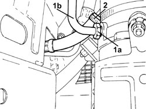
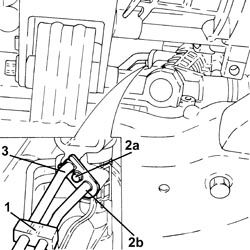
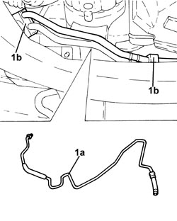
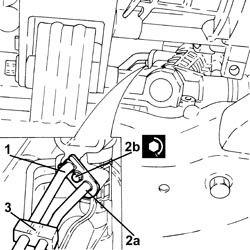
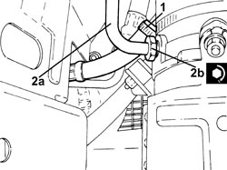

4130B42 RETURN PIPE FROM POWER STEERING BOX TO POWER STEERING FLUID RESEVIOR - R.R.
- Path
- Procedures > 41 STEERING UNIT > 4130 POWER STEERING > 4130B POWER STEERING HYDRAULIC SYTEM > 4130B42 RETURN PIPE FROM POWER STEERING BOX TO POWER STEERING FLUID RESEVIOR - R.R.
- Kind
- repair procedure (removal / refitting; the operation number is the code)
- Applies to
- all engines; all production periods
- Interactive page
- https://sloeber94.github.io/elrnDB-fCrm/en/#/194000535
Applies to: engines: 2.2; all production periods
 Removing
Removing
 Refitting
Refitting- Position the vehicle on a lift.
Op. 4450B04 RIGHT FRONT WHEEL - R.R
Op. 7055B66 ENGINE COMPARTMENT DUST COVER IN RIGHT FRONT WHEEL ARCH - R.R.
Op. 7055B91 RIGHT FRONT WHEEL ARCH LINER - R.R.
1. Undo the connector (1a) and disconnect the supply pipe from the pump to the power assisted steering box (1b), pump side.
2. Loosen the band and disconnect the power assisted steering fluid reservoir return pipe, reservoir side.

Applies to: engines: 2.2; all production periods
1. Open the band fastening the power assisted steering system pipes to the steering box.
2. Undo the bolt (2a) and disconnect the supply pipe from the pump to the power assisted steering box (2b), power steering box side.
3. Disconnect the return pipe from the power assisted steering box to the reservoir, power assisted steering box side.

Applies to: engines: 2.2; all production periods
1. Release the return pipe from the power assisted steering box to the power assisted steering fluid reservoir (1a) after having released it from the fastenings (1b) on the front suspension frame.

Applies to: engines: 2.2; all production periods
Refitting
Removing- Replace the O-rings on the power assisted steering pipe connectors disconnected.
- Place the return pipe from the power assisted steering box to the power assisted steering fluid reservoir back in its housing and secure it to the front suspension frame using the bands.
1. Connect the return pipe from the power assisted steering box to the reservoir, power assisted steering box side.
2. Connect the supply pipe from the pump to the power assisted steering box (2a), power assisted steering box side and tighten the bolt (2b) fixing the flange to the recommended torque.
Component | Fastening | dia | Value (daNm) | Validity |
|---|---|---|---|---|
Inlet/outlet pipes on power assisted steering box | Bolt | M8 | (power assisted steering box side) 1.0 - 1.2 |
3. Close the band fastening the power assisted steering system pipes to the steering box.

Applies to: engines: 2.2; all production periods
1. Connect the return pipe from the power assisted steering box to the fluid reservoir, reservoir side and tighten the band.
2. Connect the supply pipe from the pump to the power assisted steering box (2a), pump side side and tighten the connector (2b) to the recommended torque.
Component | Fastening | dia | Value (daNm) | Validity |
|---|---|---|---|---|
Supply pipe from pump to power assisted steering box | Connector | M16x1.5 | (electric pump side) 3.0 |

Applies to: engines: 2.2; all production periods
Op. 7055B91 RIGHT FRONT WHEEL ARCH LINER - R.R.
Op. 7055B66 ENGINE COMPARTMENT DUST COVER IN RIGHT FRONT WHEEL ARCH - R.R.
Op. 4450B04 RIGHT FRONT WHEEL - R.R
Op. 0010T71 POWER STEERING FLUID CHECK LEVEL AND TOP UP IF NECESSARY
Op. 0010T75 HYDRAULIC POWER STEERING SYSTEM BLEED AIR
- Remove the vehicle from the lift.
Applies to: engines: 1.8, 1.9 JTD 8v, 1.9 JTD 16v, 2.4 JTD 20v; all production periods
Removing
RefittingOp. 7055B54 UNDER ENGINE PROTECTION/GUARD - R.R.
Op. 1076B72 INTERMEDIATE EXHAUST PIPE WITH HOSE SECTION - R+R
Op. 1008C34 BRACKET ON GEARBOX FOR LOWER REACTION ROD - R.R.
Op. 4130B25 POWER STEERING PUMP ASSEMBLY R R FOR VERSIONS WITH AIR CONDITIONER
Applies to: engines: 1.8, 1.9 JTD 8v, 1.9 JTD 16v, 2.4 JTD 20v; all production periods
Refitting
RemovingOp. 4130B25 POWER STEERING PUMP ASSEMBLY R R FOR VERSIONS WITH AIR CONDITIONER
Op. 1008C34 BRACKET ON GEARBOX FOR LOWER REACTION ROD - R.R.
Op. 1076B72 INTERMEDIATE EXHAUST PIPE WITH HOSE SECTION - R+R
Op. 7055B54 UNDER ENGINE PROTECTION/GUARD - R.R.
Op. 0010T71 POWER STEERING FLUID CHECK LEVEL AND TOP UP IF NECESSARY
Topics linked from this page (9)
- 0010T71 POWER STEERING FLUID CHECK LEVEL AND TOP UP IF NECESSARY
- 0010T75 HYDRAULIC POWER STEERING SYSTEM BLEED AIR
- 1008C34 BRACKET ON GEARBOX FOR LOWER REACTION ROD - R.R.
- 1076B72 INTERMEDIATE EXHAUST PIPE WITH HOSE SECTION - R+R
- 4130B25 POWER STEERING PUMP ASSEMBLY R R FOR VERSIONS WITH AIR CONDITIONER
- 4450B04 RIGHT FRONT WHEEL - R.R
- 7055B54 UNDER ENGINE PROTECTION/GUARD - R.R.
- 7055B66 ENGINE COMPARTMENT DUST COVER IN RIGHT FRONT WHEEL ARCH - R.R.
- 7055B91 RIGHT FRONT WHEEL ARCH LINER - R.R.